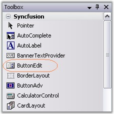
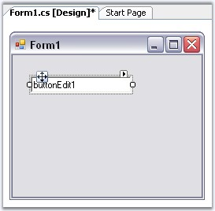
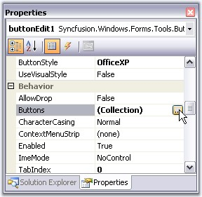
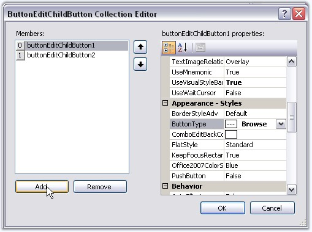
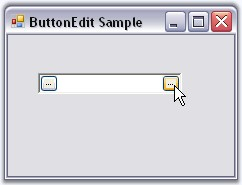
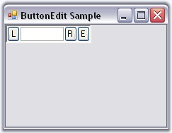

This section will help you to get started with the ButtonEdit control. The below topics will guide you to create ButtonEdit control through designer and programmatically.
The ButtonEdit control can be used in situations where a set of buttons are needed alongside an edit control, such as in a browser for files dialog. This tutorial shows how to use the ButtonEdit control, set the Button properties and handle the events.
1. Create a new Windows Forms application and open the main form in the designer. Drag and drop ButtonEdit control from the toolbox to the form.

Figure 163: ButtonEdit Control in Toolbox
2. When the control is initially added to the form, it appears like an edit control with no buttons.

Figure 164: ButtonEdit Control in the Designer Form
3. We can add buttons to the control using ButtonEditChildButton Collection Editor which is invoked by ButtonEdit.Buttons property. Editor can also be accessed using Smart Tag option.

Figure 165: Opening ButtonEditChildButton Collection Editor using "Button" Property
4. Set properties for buttons using the Editor. You can specify the attributes for any of the child buttons through the collection editor or by clicking any button and then selecting the properties in the property grid, that display the properties for the selected button.

Figure 166: Adding Buttons using ButtonEditChildButton Collection Editor
 Note: You can also add or remove buttons to
the ButtonEdit.Buttons collection through the Add Button and Remove Button verbs
provided.
Note: You can also add or remove buttons to
the ButtonEdit.Buttons collection through the Add Button and Remove Button verbs
provided.
5. Run the application. You can specify handlers for these child buttons also.

Figure 167: ButtonEdit Control with Child Buttons at Run Time
See Also
To create a ButtonEdit control programmatically, follow the below steps.
1. Include the required namespace.
|
[C#]
using Syncfusion.Windows.Forms.Tools; |
|
[VB.NET]
Imports Syncfusion.Windows.Forms.Tools |
2. Create an instances of ButtonEdit, TextBox and three ButtonEditChildButtons.
|
[C#]
private Syncfusion.Windows.Forms.Tools.ButtonEdit buttonEdit1; private System.Windows.Forms.TextBox textBox1; private Syncfusion.Windows.Forms.Tools.ButtonEditChildButton buttonEditChildButton1; private Syncfusion.Windows.Forms.Tools.ButtonEditChildButton buttonEditChildButton2; private Syncfusion.Windows.Forms.Tools.ButtonEditChildButton buttonEditChildButton3;
this.buttonEdit1=new Syncfusion.Windows.Forms.Tools.ButtonEdit(); this.textBox1=new TextBox(); this.buttonEditChildButton1=new Syncfusion.Windows.Forms.Tools.ButtonEditChildButton(); this.buttonEditChildButton2=new Syncfusion.Windows.Forms.Tools.ButtonEditChildButton(); this.buttonEditChildButton3=new Syncfusion.Windows.Forms.Tools.ButtonEditChildButton(); |
|
[VB.NET]
Private buttonEdit1 As Syncfusion.Windows.Forms.Tools.ButtonEdit Private textBox1 As System.Windows.Forms.TextBox Private buttonEditChildButton1 As Syncfusion.Windows.Forms.Tools.ButtonEditChildButton Private buttonEditChildButton2 As Syncfusion.Windows.Forms.Tools.ButtonEditChildButton Private buttonEditChildButton3 As Syncfusion.Windows.Forms.Tools.ButtonEditChildButton
Me.buttonEdit1 = New Syncfusion.Windows.Forms.Tools.ButtonEdit() Me.textBox1 = New TextBox() Me.buttonEditChildButton1 = New Syncfusion.Windows.Forms.Tools.ButtonEditChildButton() Me.buttonEditChildButton2 = New Syncfusion.Windows.Forms.Tools.ButtonEditChildButton() Me.buttonEditChildButton3 = New Syncfusion.Windows.Forms.Tools.ButtonEditChildButton() |
3. Embed the TextBox1 to the textBox of ButtonEdit.
|
[C#]
//Associating the TextBoxExt control. this.buttonEdit1.TextBox=this.textBox1; |
|
[VB.NET]
'Associating the TextBoxExt control. Me.buttonEdit1.TextBox=Me.textBox1 |
4. Set the alignment and text for the buttons.
|
[C#]
//Setting Button alignment for Child Button 1 //By default the alignment for other buttons will be right this.buttonEditChildButton1.ButtonAlign = ButtonAlignment.Left; //Setting text for child Buttons. this.buttonEditChildButton1.Text = "L"; this.buttonEditChildButton2.Text = "R"; this.buttonEditChildButton3.Text = "E"; |
|
[VB.NET]
'Setting Button alignment for Child Button 1. 'By default the alignment for other buttons will be right Me.buttonEditChildButton1.ButtonAlign = ButtonAlignment.Left 'Setting text for child Buttons Me.buttonEditChildButton1.Text = "L" Me.buttonEditChildButton2.Text = "R" Me.buttonEditChildButton3.Text = "E" |
5. Add ButtonEditChildButtons to the ButtonEdit which then add it to the form.
|
[C#]
this.buttonEdit1.Buttons.Add(this.buttonEditChildButton1); this.buttonEdit1.Buttons.Add(this.buttonEditChildButton2); this.buttonEdit1.Buttons.Add(this.buttonEditChildButton3);
this.Controls.Add(this.buttonEdit1); |
|
[VB.NET]
Me.buttonEdit1.Buttons.Add(Me.buttonEditChildButton1) Me.buttonEdit1.Buttons.Add(Me.buttonEditChildButton2) Me.buttonEdit1.Buttons.Add(Me.buttonEditChildButton3)
Me.Controls.Add(Me.buttonEdit1) |
6. Run the application. The output will be like below.

Figure 168: ButtonEdit control created Programmatically
See Also